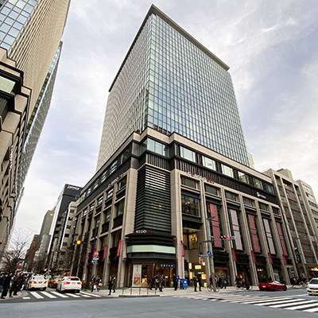
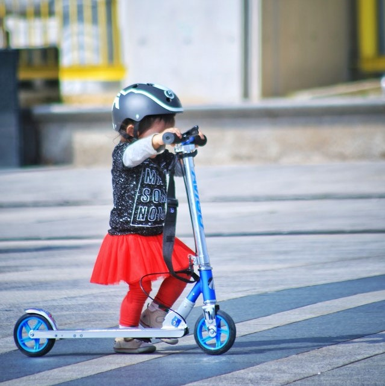

People
Many families have resided in Nihonbashi for generations. A new addition to the area is the Coredo shopping district. The combination of 3 mall districts was made in a location where many family-owned and operated businesses used to be. Instead of forcing the small businesses out all together, they all moved into the mall, even retaining the old Shinto shrines in the design. Even with the modern architectural development, the families and business they have run, in some cases for hundreds of years, are still in this downtown core of Tokyo.
The residents of Nihonbashi are proud of their community and do their best to preserve its history and culture. The merchants and craftsmen in the area have strong relationships established over decades and are always willing to work with and support each other. They value discipline and hospitality, and their knowledge and experience in their work never fail to entertain and amaze their guests.
People’s desire to live in the area is always high. The safety, robust infrastructure, quality city maintenance and community services make Nihonbashi one of the best places both to visit and live.
